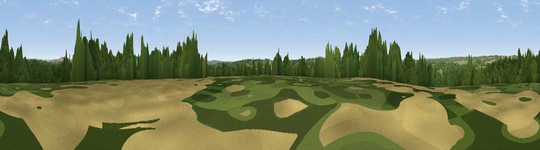

Cadbury Hill
#33095 in England · top 43% of its area beats it · near MottisfontThe view, rendered

A 360° render of this exact spot computed from the terrain model, tree cover and land cover — summer colours, afternoon light, calibrated against photographs of famous viewpoints. Real trees, hedges and buildings will differ in detail.
The panorama
Grey silhouette: terrain skyline in each direction (720 bearings, Earth curvature and refraction included). Dashed green: skyline with trees (+15 m) and buildings (+8 m) as obstacles. Blue strip: how far the ground is visible on each bearing.
Where the view opens
Wedge length = distance to the farthest visible ground on that bearing (vegetation-aware). Rings at 10, 25 and 50 km.
What fills the view
45% woodland · 38% grassland · 16% cropland ·
Angular shares of the visible panorama (visual magnitude), not map area. Landscape diversity 0.46 (0–1 Shannon).
Key numbers
More beautiful places nearby
The staircase of upgrades: each row has a higher view potential than everything closer. Driving times are estimates from straight-line distance, calibrated against real road routing — check an actual route before setting out.
| Place | Direction | Drive | Score |
|---|---|---|---|
| Viewpoint near Mottisfont | ENE · 3 km | ~8 min | 44.2 |
| Viewpoint near Houghton | NNE · 4 km | ~9 min | 45.9 |
| Viewpoint near West Dean | WSW · 5 km | ~11 min | 53.1 |
| Viewpoint near West Dean | WSW · 5 km | ~12 min | 57.9 |
| Viewpoint near Broughton | NNW · 6 km | ~13 min | 60.5 |
| Kent's Wood | NNW · 8 km | ~15 min | 60.9 |
| Viewpoint near King's Somborne | E · 9 km | ~17 min | 61.3 |
| Viewpoint near Sparsholt | E · 9 km | ~18 min | 66.9 |
51.04642, -1.55674 · source: osm peak · position refined by local search. Computed location — check access rights before visiting.